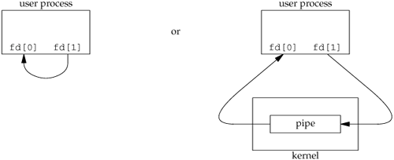
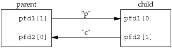

15.2. PipesPipes are the oldest form of UNIX System IPC and are provided by all UNIX systems. Pipes have two limitations.
We'll see that FIFOs (Section 15.5) get around the second limitation, and that UNIX domain sockets (Section 17.3) and named STREAMS-based pipes (Section 17.2.2) get around both limitations. Despite these limitations, half-duplex pipes are still the most commonly used form of IPC. Every time you type a sequence of commands in a pipeline for the shell to execute, the shell creates a separate process for each command and links the standard output of one to the standard input of the next using a pipe. A pipe is created by calling the pipe function.
Two file descriptors are returned through the filedes argument: filedes[0] is open for reading, and filedes[1] is open for writing. The output of filedes[1] is the input for filedes[0].
Two ways to picture a half-duplex pipe are shown in Figure 15.2. The left half of the figure shows the two ends of the pipe connected in a single process. The right half of the figure emphasizes that the data in the pipe flows through the kernel. Figure 15.2. Two ways to view a half-duplex pipeThe fstat function (Section 4.2) returns a file type of FIFO for the file descriptor of either end of a pipe. We can test for a pipe with the S_ISFIFO macro.
A pipe in a single process is next to useless. Normally, the process that calls pipe then calls fork, creating an IPC channel from the parent to the child or vice versa. Figure 15.3 shows this scenario. Figure 15.3. Half-duplex pipe after a fork
What happens after the fork depends on which direction of data flow we want. For a pipe from the parent to the child, the parent closes the read end of the pipe (fd[0]), and the child closes the write end (fd[1]). Figure 15.4 shows the resulting arrangement of descriptors. Figure 15.4. Pipe from parent to child
For a pipe from the child to the parent, the parent closes fd[1], and the child closes fd[0]. When one end of a pipe is closed, the following two rules apply.
When we're writing to a pipe (or FIFO), the constant PIPE_BUF specifies the kernel's pipe buffer size. A write of PIPE_BUF bytes or less will not be interleaved with the writes from other processes to the same pipe (or FIFO). But if multiple processes are writing to a pipe (or FIFO), and if we write more than PIPE_BUF bytes, the data might be interleaved with the data from the other writers. We can determine the value of PIPE_BUF by using pathconf or fpathconf (recall Figure 2.11). ExampleFigure 15.5 shows the code to create a pipe between a parent and its child and to send data down the pipe. Figure 15.5. Send data from parent to child over a pipe
#include "apue.h"
int
main(void)
{
int n;
int fd[2];
pid_t pid;
char line[MAXLINE];
if (pipe(fd) < 0)
err_sys("pipe error");
if ((pid = fork()) < 0) {
err_sys("fork error");
} else if (pid > 0) { /* parent */
close(fd[0]);
write(fd[1], "hello world\n", 12);
} else { /* child */
close(fd[1]);
n = read(fd[0], line, MAXLINE);
write(STDOUT_FILENO, line, n);
}
exit(0);
}
In the previous example, we called read and write directly on the pipe descriptors. What is more interesting is to duplicate the pipe descriptors onto standard input or standard output. Often, the child then runs some other program, and that program can either read from its standard input (the pipe that we created) or write to its standard output (the pipe). ExampleConsider a program that displays some output that it has created, one page at a time. Rather than reinvent the pagination done by several UNIX system utilities, we want to invoke the user's favorite pager. To avoid writing all the data to a temporary file and calling system to display that file, we want to pipe the output directly to the pager. To do this, we create a pipe, fork a child process, set up the child's standard input to be the read end of the pipe, and exec the user's pager program. Figure 15.6 shows how to do this. (This example takes a command-line argument to specify the name of a file to display. Often, a program of this type would already have the data to display to the terminal in memory.) Before calling fork, we create a pipe. After the fork, the parent closes its read end, and the child closes its write end. The child then calls dup2 to have its standard input be the read end of the pipe. When the pager program is executed, its standard input will be the read end of the pipe. When we duplicate a descriptor onto another (fd[0] onto standard input in the child), we have to be careful that the descriptor doesn't already have the desired value. If the descriptor already had the desired value and we called dup2 and close, the single copy of the descriptor would be closed. (Recall the operation of dup2 when its two arguments are equal, discussed in Section 3.12). In this program, if standard input had not been opened by the shell, the fopen at the beginning of the program should have used descriptor 0, the lowest unused descriptor, so fd[0] should never equal standard input. Nevertheless, whenever we call dup2 and close to duplicate a descriptor onto another, we'll always compare the descriptors first, as a defensive programming measure. Note how we try to use the environment variable PAGER to obtain the name of the user's pager program. If this doesn't work, we use a default. This is a common usage of environment variables. Figure 15.6. Copy file to pager program
#include "apue.h"
#include <sys/wait.h>
#define DEF_PAGER "/bin/more" /* default pager program */
int
main(int argc, char *argv[])
{
int n;
int fd[2];
pid_t pid;
char *pager, *argv0;
char line[MAXLINE];
FILE *fp;
if (argc != 2)
err_quit("usage: a.out <pathname>");
if ((fp = fopen(argv[1], "r")) == NULL)
err_sys("can't open %s", argv[1]);
if (pipe(fd) < 0)
err_sys("pipe error");
if ((pid = fork()) < 0) {
err_sys("fork error");
} else if (pid > 0) { /* parent */
close(fd[0]); /* close read end */
/* parent copies argv[1] to pipe */
while (fgets(line, MAXLINE, fp) != NULL) {
n = strlen(line);
if (write(fd[1], line, n) != n)
err_sys("write error to pipe");
}
if (ferror(fp))
err_sys("fgets error");
close(fd[1]); /* close write end of pipe for reader */
if (waitpid(pid, NULL, 0) < 0)
err_sys("waitpid error");
exit(0);
} else { /* child */
close(fd[1]); /* close write end */
if (fd[0] != STDIN_FILENO) {
if (dup2(fd[0], STDIN_FILENO) != STDIN_FILENO)
err_sys("dup2 error to stdin");
close(fd[0]); /* don't need this after dup2 */
}
/* get arguments for execl() */
if ((pager = getenv("PAGER")) == NULL)
pager = DEF_PAGER;
if ((argv0 = strrchr(pager, '/')) != NULL)
argv0++; /* step past rightmost slash */
else
argv0 = pager; /* no slash in pager */
if (execl(pager, argv0, (char *)0) < 0)
err_sys("execl error for %s", pager);
}
exit(0);
}
ExampleRecall the five functions TELL_WAIT, TELL_PARENT, TELL_CHILD, WAIT_PARENT, and WAIT_CHILD from Section 8.9. In Figure 10.24, we showed an implementation using signals. Figure 15.7 shows an implementation using pipes. We create two pipes before the fork, as shown in Figure 15.8. The parent writes the character "p" across the top pipe when TELL_CHILD is called, and the child writes the character "c" across the bottom pipe when TELL_PARENT is called. The corresponding WAIT_xxx functions do a blocking read for the single character. Note that each pipe has an extra reader, which doesn't matter. That is, in addition to the child reading from pfd1[0], the parent also has this end of the top pipe open for reading. This doesn't affect us, since the parent doesn't try to read from this pipe. Figure 15.7. Routines to let a parent and child synchronize
#include "apue.h"
static int pfd1[2], pfd2[2];
void
TELL_WAIT(void)
{
if (pipe(pfd1) < 0 || pipe(pfd2) < 0)
err_sys("pipe error");
}
void
TELL_PARENT(pid_t pid)
{
if (write(pfd2[1], "c", 1) != 1)
err_sys("write error");
}
void
WAIT_PARENT(void)
{
char c;
if (read(pfd1[0], &c, 1) != 1)
err_sys("read error");
if (c != 'p')
err_quit("WAIT_PARENT: incorrect data");
}
void
TELL_CHILD(pid_t pid)
{
if (write(pfd1[1], "p", 1) != 1)
err_sys("write error");
}
void
WAIT_CHILD(void)
{
char c;
if (read(pfd2[0], &c, 1) != 1)
err_sys("read error");
if (c != 'c')
err_quit("WAIT_CHILD: incorrect data");
}
Figure 15.8. Using two pipes for parentchild synchronization |